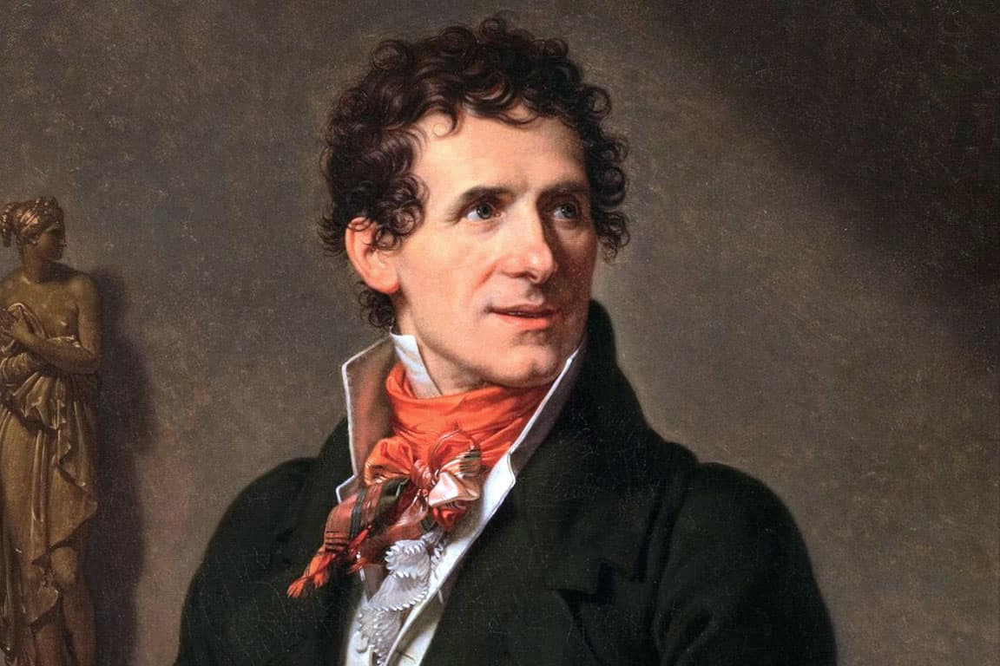

Preparazione della mostra

MARMO E ANIMA
Una Mostra su Antonio Canova
Tema: La Bellezza · Cinque capolavori neoclassici
[ ENTRA NELLA MOSTRA ]
MARMO E ANIMA
W A S D — muoviti
Mouse — guarda
E — apri scheda opera
F — schermo intero
ESC — chiudi / sblocca
Shift — corri
E
Leggi scheda opera
✕
OPERA 01 / 06
–
–
–
–
Committente
–
Descrizione
–
Emozioni
–